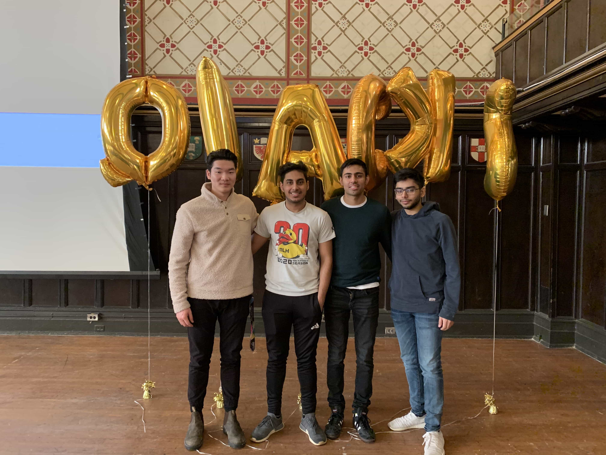

Fireguard - IoT Forest Fire Detection System
Queens Hacks 2020 Project
🏆
Queens Hacks
2020 Sunlife Financial Best Health Hack
🏆 Major League Hacking Best Use of Google Cloud
Tech Stack
NodeMCU (Arduino Microcontroller) | C++ | VueJS | Python | Google Firebase | I2C Protocol | IoT
Inspiration
The turn of the new year was accompanied by the news of fire ravaging most of Australia. In total, an estimated of over 1 billion
animals are estimated to have died along with over 25 million acres of land. The effects of the fire left a lasting impression on
our views of how technology can be used for good and helped us discover a newfound sense of purpose. We sought to use our technological
prowess to ensure that an issue like this doesn't become a common occurrence. Fireguard is an Internet of Things solution designed to
detect and prevent forest fires at the instant they arise. By placing this tool in different places in the forest, we are able to monitor
important vitals about the environment and detect sudden changes in temperature, CO2 levels, atmospheric pressure and volume of total
organic compounds. We then retrieved this information and created a unique web user interface that responded to the real-time changes
in data to relay information across all individuals over watching the situation.
The scope of our hackathon project was:
• A hardware device that monitors environment conditions
• A dashboard that allows one to monitor the status of all the beacons and alert EMS if they detect sudden changes in environment conditions
Our Team
How It Works
Fireguard is an IoT enabled beacon used to detect and predict the spread of forest fires. Equipped with temperature, humidity, CO2, TVOC, soil moisture, UV lights, Color Temperature, and light intensity sensors, Fireguard beacons transmit this information in real-time using IoT to a Google real-time Firebase database where it is then fetched and processed. Our team utilized time-series forecasting to detect sudden abnormal changes in the data in order to detect symptoms of forest fires at the instant they start. Then, using the data and looking at pattern at which the Fireguard beacons start getting triggered, we are able to predict the direction of forest fire spread.